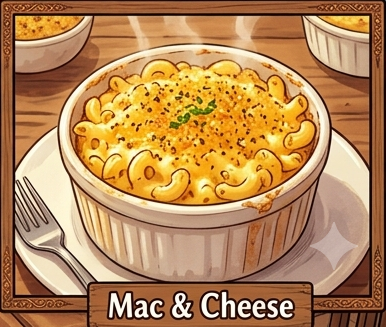

Description
Mac & Cheese is the ultimate comfort food, featuring tender macaroni coated in a rich, creamy cheese sauce. This classic dish is quick, satisfying, and loved by both kids and adults. Perfect as a main course or a delicious side dish.

🛒 Ingredients
👨🍳 Instructions
If needed, add a little reserved pasta water to create a silky sauce.
Season with salt and black pepper to taste.
Serve immediately with additional Parmesan cheese, if desired.
⏱️ Recipe Information
Preparation Time: 10 minutes
Cooking Time: 20 minutes
Total Time: 30 minutes
Servings: 2–3
Difficulty: Easy
For an extra cheesy flavor, mix cheddar and mozzarella together. If you enjoy a crispy topping, transfer the mac & cheese to a baking dish, sprinkle with breadcrumbs and extra cheese, then bake for 10 minutes until golden brown.
🍽️ Best Served With
Garlic bread
Roasted broccoli
Caesar salad
Grilled chicken or crispy chicken strips
Tomato soup
Fresh lemonade or iced tea